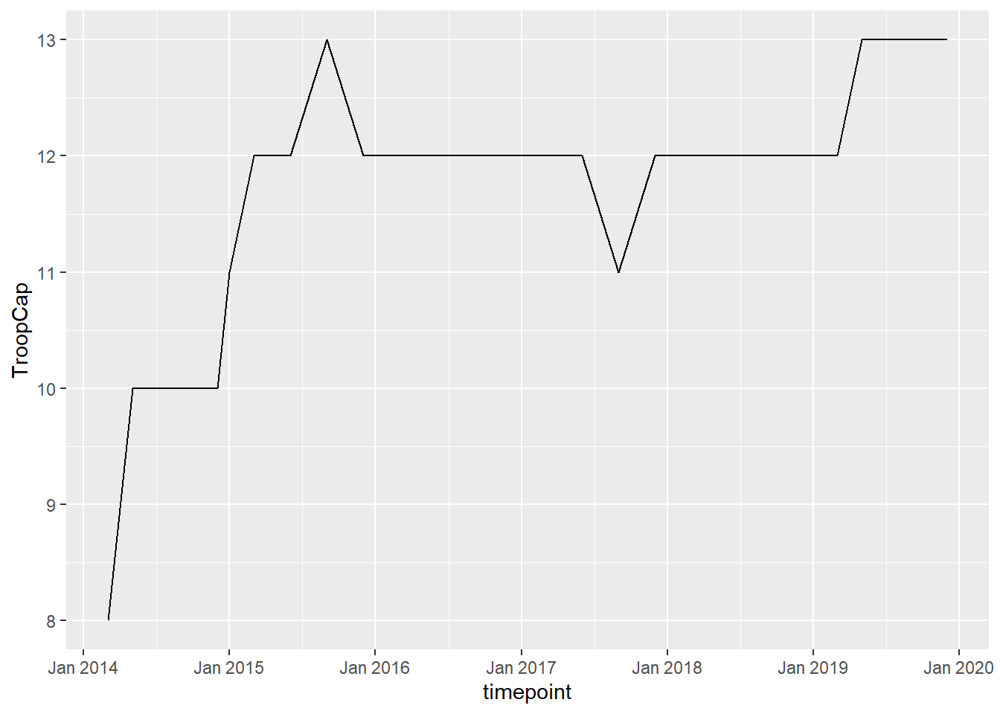

Last updated: 2020-12-15
Checks: 7 0
Knit directory: GeoPKO/
This reproducible R Markdown analysis was created with workflowr (version 1.6.2). The Checks tab describes the reproducibility checks that were applied when the results were created. The Past versions tab lists the development history.
Great! Since the R Markdown file has been committed to the Git repository, you know the exact version of the code that produced these results.
Great job! The global environment was empty. Objects defined in the global environment can affect the analysis in your R Markdown file in unknown ways. For reproduciblity it’s best to always run the code in an empty environment.
The command set.seed(20200629) was run prior to running the code in the R Markdown file. Setting a seed ensures that any results that rely on randomness, e.g. subsampling or permutations, are reproducible.
Great job! Recording the operating system, R version, and package versions is critical for reproducibility.
Nice! There were no cached chunks for this analysis, so you can be confident that you successfully produced the results during this run.
Great job! Using relative paths to the files within your workflowr project makes it easier to run your code on other machines.
Great! You are using Git for version control. Tracking code development and connecting the code version to the results is critical for reproducibility.
The results in this page were generated with repository version 3266141. See the Past versions tab to see a history of the changes made to the R Markdown and HTML files.
Note that you need to be careful to ensure that all relevant files for the analysis have been committed to Git prior to generating the results (you can use wflow_publish or wflow_git_commit). workflowr only checks the R Markdown file, but you know if there are other scripts or data files that it depends on. Below is the status of the Git repository when the results were generated:
Ignored files:
Ignored: .Rhistory
Ignored: .Rproj.user/
Ignored: figure/
Unstaged changes:
Modified: analysis/_site.yml
Deleted: analysis/license.Rmd
Note that any generated files, e.g. HTML, png, CSS, etc., are not included in this status report because it is ok for generated content to have uncommitted changes.
These are the previous versions of the repository in which changes were made to the R Markdown (analysis/index.Rmd) and HTML (docs/index.html) files. If you’ve configured a remote Git repository (see ?wflow_git_remote), click on the hyperlinks in the table below to view the files as they were in that past version.
| File | Version | Author | Date | Message |
|---|---|---|---|---|
| Rmd | 3266141 | Nguyen Ha | 2020-12-15 | incorporating new updates |
| html | 885e0d5 | Nguyen Ha | 2020-12-09 | Build site. |
| html | 263d508 | Nguyen Ha | 2020-12-09 | Build site. |
| html | a966566 | Nguyen Ha | 2020-12-03 | Build site. |
| Rmd | eafa002 | Nguyen Ha | 2020-12-03 | adapting to new dataset version |
| html | acee4ed | Nguyen Ha | 2020-11-25 | Build site. |
| html | 2011bda | Nguyen Ha | 2020-11-25 | Build site. |
| Rmd | 448b94c | Nguyen Ha | 2020-11-25 | Revised viz, index, incorporated merge.rmd |
| Rmd | f2f9e90 | Nguyen Ha | 2020-11-25 | Before building with wflowr |
| html | f2f9e90 | Nguyen Ha | 2020-11-25 | Before building with wflowr |
| Rmd | 957900e | GitHub | 2020-08-24 | Merge pull request #19 from hatnguyen267/render |
| html | 751a80b | Nguyen Ha | 2020-08-24 | Build site. |
| Rmd | 611e458 | Nguyen Ha | 2020-08-24 | new build |
| Rmd | 932c43b | Lou van Roozendaal | 2020-08-22 | Update |
| Rmd | 2e94be5 | Lou van Roozendaal | 2020-08-20 | update Lou |
| Rmd | 2d92eca | Lou van Roozendaal | 2020-08-17 | packages |
| Rmd | 6538fb8 | Lou van Roozendaal | 2020-08-17 | troop count |
| html | 658018a | Nguyen Ha | 2020-08-17 | Build site. |
| Rmd | b846f76 | Nguyen Ha | 2020-08-17 | adding Lou’s update |
| Rmd | c70e8b0 | Lou van Roozendaal | 2020-08-14 | descriptivstatistics |
| html | 7447d5c | Nguyen Ha | 2020-08-13 | Build site. |
| Rmd | 03c6897 | Nguyen Ha | 2020-08-13 | wflow_publish(all = TRUE) |
| html | 9a57942 | Nguyen Ha | 2020-08-13 | Build site. |
| Rmd | 3c3a981 | Nguyen Ha | 2020-08-13 | Updating new maps, new pages |
| Rmd | 7cb84d7 | Tanushree Rao | 2020-08-10 | updating map |
| html | e72567f | Nguyen Ha | 2020-07-10 | Build site. |
| Rmd | 9ec337b | Nguyen Ha | 2020-07-10 | Update |
| Rmd | 92d111c | Nguyen Ha | 2020-07-10 | Pulling before compiling. Merge branch ‘master’ of https://github.com/hatnguyen267/GeoPKO into render |
| Rmd | bcabf5e | Nguyen Ha | 2020-07-10 | Pre-pull commit |
| html | bcabf5e | Nguyen Ha | 2020-07-10 | Pre-pull commit |
| Rmd | a35561b | Lou van Roozendaal | 2020-07-09 | added table |
| html | baaaa20 | Nguyen Ha | 2020-07-08 | Build site. |
| Rmd | b3d8755 | Nguyen Ha | 2020-07-08 | Adjusting graph output size |
| html | 884b86f | Nguyen Ha | 2020-07-08 | Build site. |
| Rmd | e863725 | Nguyen Ha | 2020-07-08 | building site with Tanushree’s additions |
| Rmd | 8fe33fc | GitHub | 2020-07-08 | Merge branch ‘master’ into hey |
| html | 325ac4f | Nguyen Ha | 2020-07-08 | Build site. |
| Rmd | f5bc390 | Nguyen Ha | 2020-07-08 | Updating the stupid animated graph hope it will render |
| html | 6bcd405 | Nguyen Ha | 2020-07-08 | Build site. |
| Rmd | 176eca5 | Nguyen Ha | 2020-07-08 | wflow_publish(“analysis/index.Rmd”) |
| Rmd | ebb000d | Nguyen Ha | 2020-07-08 | Animation added to index.rmd, waiting to be rendered |
| html | ebb000d | Nguyen Ha | 2020-07-08 | Animation added to index.rmd, waiting to be rendered |
| Rmd | 5edc140 | Tanushree Rao | 2020-07-07 | new map |
| html | 819ccf2 | Nguyen Ha | 2020-07-03 | Build site. |
| Rmd | 9c0642e | Nguyen Ha | 2020-07-03 | wflow_publish(“analysis/index.Rmd”) |
| Rmd | 0d5cc47 | Nguyen Ha | 2020-07-03 | Fixed conflict with main fol. |
| Rmd | 4cf53c8 | Nguyen Ha | 2020-07-03 | Fixing legend position; previous tables |
| Rmd | 14ab237 | GitHub | 2020-07-03 | Update index.Rmd |
| Rmd | 557ebbf | Lou van Roozendaal | 2020-07-03 | Lou_change_graph |
| html | 3bde5f5 | Nguyen Ha | 2020-07-02 | Build site. |
| Rmd | 8b39fe5 | Nguyen Ha | 2020-07-02 | wflow_publish(c(“index.Rmd”, “about.Rmd”)) |
| html | 8b39fe5 | Nguyen Ha | 2020-07-02 | wflow_publish(c(“index.Rmd”, “about.Rmd”)) |
| html | 01d2b98 | hatnguyen267 | 2020-06-29 | Build site. |
| Rmd | 0a3c9c9 | hatnguyen267 | 2020-06-29 | more to index.rmb |
| html | 50d7b31 | hatnguyen267 | 2020-06-29 | Build site. |
| Rmd | 4db5b4f | hatnguyen267 | 2020-06-29 | adding items to index.rmb |
| html | 4d2d90f | hatnguyen267 | 2020-06-29 | Build site. |
| Rmd | a7817f7 | hatnguyen267 | 2020-06-29 | wflow_publish(all = TRUE) |
| Rmd | 8e7fc45 | hatnguyen267 | 2020-06-29 | Start workflowr project. |
This document contains a series of steps that the project members have performed to extract meaningful information the Geo-PKO dataset. More details on the dataset can be found on its homepage.
Load packages.
library(readr)
library(ggthemes)
library(knitr)
library(kableExtra)
library(lubridate)
library(tidyr)
library(dplyr)We start by importing the dataset. To get a sense of how read_csv would parse the dataset, run spec_csv() on the dataset beforehand.
specs <- spec_csv("data/Geo_PKO_v.2.0.csv")Parsed with column specification:
cols(
.default = col_double(),
source = col_character(),
mission = col_character(),
location = col_character(),
country = col_character(),
old_xy = col_logical(),
geocomment = col_character(),
comment.on.unit = col_character(),
no.troops = col_character(),
rpf = col_logical(),
rpf.no = col_logical(),
obs.base = col_logical(),
cantonment = col_logical(),
disarmament = col_logical(),
he.sup.lw = col_logical(),
troop.type = col_character(),
nameoftcc_1 = col_character(),
notroopspertcc_1 = col_character(),
nameoftcc_2 = col_character(),
nameoftcc_3 = col_character(),
nameoftcc_4 = col_character()
# ... with 40 more columns
)See spec(...) for full column specifications.This snippet shows that R might arbitrarily parse our columns as a random mix of logical or character variables. Here, we are going to dodge this issue by telling R to parse all columns as character. Running str() can help us ensure that the process was carried out correctly.
GeoPKO <- readr::read_csv("data/Geo_PKO_v.2.0.csv", col_types = cols(.default="c"))
str(GeoPKO)
nrow(GeoPKO)
ncol(GeoPKO)The last two code lines show us that the dataframe contains 17927 observations and 113 columns. The output from str() could get rather clunky, so here is a prettier snippet produced by kableExtra.
kable(GeoPKO[1:5,]) %>% kable_styling() %>%
scroll_box(width = "100%", height = "200px") #displaying the first five rows| source | mission | year | month | location | geosplit | country | latitude | longitude | old_xy | geocomment | zone.de.confidence | battalion | company | platoon | other.size | comment.on.unit | no.troops | rpf | rpf.no | inf | inf.no | fpu | fpu.no | res | res.no | fp | fp.no | eng | sig | trans | riv | he.sup | sf | med | maint | recon | avia | mp | demining | uav | obs.base | cantonment | disarmament | other.type | armor | he.sup.lw | troop.type | no.tcc | nameoftcc_1 | notroopspertcc_1 | nameoftcc_2 | notroopspertcc_2 | nameoftcc_3 | notroopspertcc_3 | nameoftcc_4 | notroopspertcc_4 | nameoftcc_5 | notroopspertcc_5 | nameoftcc_6 | notroopspertcc_6 | nameoftcc_7 | notroopspertcc_7 | nameoftcc_8 | notroopspertcc_8 | nameoftcc_9 | notroopspertcc_9 | nameoftcc_10 | notroopspertcc_10 | nameoftcc_11 | notroopspertcc_11 | nameoftcc_12 | notroopspertcc_12 | nameoftcc_13 | notroopspertcc_13 | nameoftcc_14 | notroopspertcc_14 | nameoftcc_15 | notroopspertcc_15 | nameoftcc_16 | notroopspertcc_16 | nameoftcc_17 | notroopspertcc_17 | unpol.dummy | unmo.dummy | coding quality for UNMO (1=unsure; 0=perfectly fine) | hq | lo | jmco | security.group.dummy | comments | cow_code | gnwo | tcc1 | tcc2 | tcc3 | tcc4 | tcc5 | tcc6 | tcc7 | tcc8 | tcc9 | tcc10 | tcc11 | tcc12 | tcc13 | tcc14 | tcc15 | tcc16 | tcc17 | adm1.id | adm1.name | prioid |
|---|---|---|---|---|---|---|---|---|---|---|---|---|---|---|---|---|---|---|---|---|---|---|---|---|---|---|---|---|---|---|---|---|---|---|---|---|---|---|---|---|---|---|---|---|---|---|---|---|---|---|---|---|---|---|---|---|---|---|---|---|---|---|---|---|---|---|---|---|---|---|---|---|---|---|---|---|---|---|---|---|---|---|---|---|---|---|---|---|---|---|---|---|---|---|---|---|---|---|---|---|---|---|---|---|---|---|---|---|---|---|---|---|
| Map no. 4309 | BINUB | 2007 | 3 | Bujumbura | 0 | Burundi | -3.3822 | 29.3644 | NA | NA | NA | 0 | 0 | 0 | 0 | NA | 0 | NA | NA | 0 | 0 | 0 | 0 | 0 | 0 | 0 | 0 | 0 | 0 | 0 | 0 | 0 | 0 | 0 | 0 | 0 | 0 | 0 | 0 | 0 | NA | NA | NA | 0 | 0 | NA | 0 | 0 | NA | NA | NA | NA | NA | NA | NA | NA | NA | NA | NA | NA | NA | NA | NA | NA | NA | NA | NA | NA | NA | NA | NA | NA | NA | NA | NA | NA | NA | NA | NA | NA | NA | NA | 0 | 0 | NA | 3 | 0 | NA | 0 | NA | 516 | 516 | NA | NA | NA | NA | NA | NA | NA | NA | NA | NA | NA | NA | NA | NA | NA | NA | NA | 3348 | Bujumbura Mairie | 124979 |
| Map no. 4309 Rev. 1 | BINUB | 2009 | 8 | Bujumbura | 0 | Burundi | -3.3822 | 29.3644 | NA | NA | NA | 0 | 0 | 0 | 0 | NA | 0 | NA | NA | 0 | 0 | 0 | 0 | 0 | 0 | 0 | 0 | 0 | 0 | 0 | 0 | 0 | 0 | 0 | 0 | 0 | 0 | 0 | 0 | 0 | NA | NA | NA | 0 | 0 | NA | 0 | 0 | NA | NA | NA | NA | NA | NA | NA | NA | NA | NA | NA | NA | NA | NA | NA | NA | NA | NA | NA | NA | NA | NA | NA | NA | NA | NA | NA | NA | NA | NA | NA | NA | NA | NA | 0 | 0 | NA | 3 | 0 | NA | 0 | NA | 516 | 516 | NA | NA | NA | NA | NA | NA | NA | NA | NA | NA | NA | NA | NA | NA | NA | NA | NA | 3348 | Bujumbura Mairie | 124979 |
| Map no. 4203 Rev. 2 | MINUCI | 2003 | 8 | Abidjan | 0 | Ivory Coast | 5.309657 | -4.012656 | NA | NA | NA | 0 | 0 | 0 | 0 | NA | 0 | NA | NA | 0 | 0 | 0 | 0 | 0 | 0 | 0 | 0 | 0 | 0 | 0 | 0 | 0 | 0 | 0 | 0 | 0 | 0 | 0 | 0 | 0 | NA | NA | NA | 0 | 0 | NA | 0 | 0 | NA | NA | NA | NA | NA | NA | NA | NA | NA | NA | NA | NA | NA | NA | NA | NA | NA | NA | NA | NA | NA | NA | NA | NA | NA | NA | NA | NA | NA | NA | NA | NA | NA | NA | 0 | 0 | NA | 3 | 0 | NA | 0 | MINUCI HQ; Also ECOWAS main HQ; France HQ | 437 | 437 | NA | NA | NA | NA | NA | NA | NA | NA | NA | NA | NA | NA | NA | NA | NA | NA | NA | 3411 | Lagunes | 137152 |
| Map no. 4203 Rev. 3 | MINUCI | 2003 | 11 | Abidjan | 0 | Ivory Coast | 5.309657 | -4.012656 | NA | NA | NA | 0 | 0 | 0 | 0 | NA | 0 | NA | NA | 0 | 0 | 0 | 0 | 0 | 0 | 0 | 0 | 0 | 0 | 0 | 0 | 0 | 0 | 0 | 0 | 0 | 0 | 0 | 0 | 0 | NA | NA | NA | 0 | 0 | NA | 0 | 0 | NA | NA | NA | NA | NA | NA | NA | NA | NA | NA | NA | NA | NA | NA | NA | NA | NA | NA | NA | NA | NA | NA | NA | NA | NA | NA | NA | NA | NA | NA | NA | NA | NA | NA | 0 | 0 | NA | 3 | 0 | NA | 0 | MINUCI HQ; Also ECOWAS main HQ; France HQ; Fanci HQ | 437 | 437 | NA | NA | NA | NA | NA | NA | NA | NA | NA | NA | NA | NA | NA | NA | NA | NA | NA | 3411 | Lagunes | 137152 |
| Map no. 4203 Rev. 4 | MINUCI | 2004 | 1 | Abidjan | 0 | Ivory Coast | 5.309657 | -4.012656 | NA | NA | NA | 0 | 0 | 0 | 0 | NA | 0 | NA | NA | 0 | 0 | 0 | 0 | 0 | 0 | 0 | 0 | 0 | 0 | 0 | 0 | 0 | 0 | 0 | 0 | 0 | 0 | 0 | 0 | 0 | NA | NA | NA | 0 | 0 | NA | 0 | 0 | NA | NA | NA | NA | NA | NA | NA | NA | NA | NA | NA | NA | NA | NA | NA | NA | NA | NA | NA | NA | NA | NA | NA | NA | NA | NA | NA | NA | NA | NA | NA | NA | NA | NA | 0 | 0 | NA | 3 | 0 | NA | 0 | MINUCI HQ; ECOWAS main HQ; France HQ; Fanci HQ | 437 | 437 | NA | NA | NA | NA | NA | NA | NA | NA | NA | NA | NA | NA | NA | NA | NA | NA | NA | 3411 | Lagunes | 137152 |
Previous versions of the dataset included UN-authorized peacekeeping missions in Africa between 1994-2018. Version 2.0 – the latest to date – brings the scope of the dataset from regional to global. Specifically, it now covers 52 missions in 44 different countries (rather than 45, since there is a disputed location between Ethiopia and Eritrea in UNMEE).
str(TotalCount <- with(GeoPKO, table(mission, country))) 'table' int [1:52, 1:45] 0 0 0 0 0 0 0 0 0 0 ...
- attr(*, "dimnames")=List of 2
..$ mission: chr [1:52] "BINUB" "MINUCI" "MINUGUA" "MINUJUSTH" ...
..$ country: chr [1:45] "Afghanistan" "Algeria" "Angola" "Bosnia and Herzegovina" ...unique(GeoPKO$mission) [1] "BINUB" "MINUCI" "UNOCI" "MINURCA" "MINURCAT"
[6] "MINURSO" "MINUSCA" "UNISFA" "MINUSMA" "UNFICYP"
[11] "MONUSCO" "UNAMID" "UNSMIS" "UNAVEM III" "UNMISS"
[16] "UNMIL" "MONUA" "MONUC" "ONUMOZ" "ONUB"
[21] "UNAMIR" "UNAMSIL" "UNMIS" "UNAVEM II" "UNIOSIL"
[26] "UNOSOM II" "UNMIH" "UNOMIL" "UNOMSIL" "UNMEE"
[31] "UNIKOM" "UNDOF" "UNTAES" "UNOMUR" "UNTSO"
[36] "UNIFIL" "UNPROFOR" "UNMIK" "UNMISET" "UNPREDEP"
[41] "UNMOT" "UNMOP" "UNCRO" "MINUGUA" "MINUSTAH"
[46] "UNSMIH" "MIPONUH" "MINUJUSTH" "UNMIBH" "UNMOGIP"
[51] "UNOMIG" "UNMIT" unique(GeoPKO$country) [1] "Burundi" "Ivory Coast"
[3] "Central African Republic" "Chad"
[5] "Algeria" "Western Sahara"
[7] "Mauritania" "Sudan"
[9] "Mali" "Cyprus"
[11] "DRC" "Syria"
[13] "Angola" "South Sudan"
[15] "Liberia" "Namibia"
[17] "Rwanda" "Uganda"
[19] "Zambia" "Zimbabwe"
[21] "Ethiopia" "Mozambique"
[23] "Sierra Leone" "Kenya"
[25] "Somalia" "Haiti"
[27] "Eritrea" "Ethiopia/Eritrea"
[29] "Kuwait" "Iraq"
[31] "Croatia" "Lebanon"
[33] "Israel" "Egypt"
[35] "Bosnia and Herzegovina" "Kosovo"
[37] "North Macedonia" "Timor-Leste"
[39] "Tajikistan" "Afghanistan"
[41] "Montenegro" "Guatemala"
[43] "Pakistan" "India"
[45] "Georgia" The following table shows missions (bottom row) and countries (top row). From this, we can see that most missions are active in only one single country. Only 1 mission is active in 9 countries at the same time.
table(TotalCount. <- rowSums(TotalCount>0))
1 2 3 4 9
38 7 4 2 1 To see what missions are active in more than three countries we can do the following:
rownames(TotalCount)[TotalCount.>2] #listing missions active in three countries or more[1] "MINURSO" "MONUC" "MONUSCO" "UNMEE" "UNMIS" "UNPROFOR" "UNTSO" rownames(TotalCount)[TotalCount.>3] #missions active in four or more countries[1] "MONUC" "UNMIS" "UNTSO"rownames(TotalCount)[TotalCount.>4] #mission active in 9 countries[1] "MONUC"Geo-PKO v2.0 covers the period of 1994-2019. Some missions that are included here were already well underway before 1994, and several are still ongoing to this date. Since data in GeoPKO is collected from deployment maps, these timestamps reflect the publication dates of the maps. Many UN peacekeeping missions release these maps on a regular basis, which could be once a year or once every three months. We can have a look at the specific periods for which each mission is coded in the dataset, arranged by the earliest starting timepoint. Note that this is not necessarily the start and end dates of a missions.
library(zoo)
Attaching package: 'zoo'The following objects are masked from 'package:base':
as.Date, as.Date.numericGeoPKO %>% select(mission, year, month) %>%
mutate(month=as.numeric(month),
MonthChr=as.character(month(month, label=TRUE, abbr= FALSE))) %>% #turn numeric months into words
unite(timepoint, c("year", "MonthChr"), sep=" ") %>%
mutate(timepoint=zoo::as.yearmon(timepoint, "%Y %B")) %>% #parse our joined date string as date to arrange
group_by(mission) %>%
summarize(start_date=min(timepoint), end_date=max(timepoint)) %>% arrange(start_date) %>%
kable(., caption= "Missions arranged by the earliest start date",
col.names=c("Mission", "Starting point", "End point")) %>% kable_styling() %>%
scroll_box(width = "100%", height = "300px") `summarise()` ungrouping output (override with `.groups` argument)| Mission | Starting point | End point |
|---|---|---|
| UNIFIL | Jan 1994 | Nov 2019 |
| ONUMOZ | Feb 1994 | Oct 1994 |
| UNPROFOR | Mar 1994 | Nov 1995 |
| UNIKOM | Apr 1994 | Jul 2003 |
| UNOMIL | Apr 1994 | Sep 1997 |
| UNAMIR | May 1994 | Nov 1995 |
| UNDOF | May 1994 | Dec 2019 |
| UNFICYP | May 1994 | Dec 2019 |
| UNMOGIP | May 1994 | Sep 2015 |
| UNOMUR | Jun 1994 | Jun 1994 |
| UNOSOM II | Jun 1994 | Jun 1994 |
| UNAVEM II | Jul 1994 | Jul 1994 |
| MINURSO | Mar 1995 | Sep 2019 |
| UNAVEM III | Mar 1995 | Apr 1997 |
| UNMIH | Jul 1995 | Jun 1996 |
| UNOMIG | Aug 1995 | Oct 2008 |
| MINUGUA | Sep 1995 | Oct 2000 |
| UNCRO | Nov 1995 | Nov 1995 |
| UNPREDEP | Nov 1995 | Feb 1999 |
| UNMOT | Dec 1995 | May 2000 |
| UNTAES | May 1996 | Dec 1996 |
| UNTSO | Aug 1996 | Jan 2019 |
| UNSMIH | Sep 1996 | Jul 1997 |
| MONUA | Aug 1997 | Feb 1999 |
| UNMIBH | Dec 1997 | Jun 2001 |
| MIPONUH | Feb 1998 | Mar 2000 |
| MINURCA | Jun 1998 | Jan 2000 |
| UNOMSIL | Aug 1998 | Sep 1999 |
| MONUC | Nov 1999 | Apr 2010 |
| UNAMSIL | Dec 1999 | Dec 2005 |
| UNMIK | Dec 1999 | Sep 2019 |
| UNMOP | Jul 2000 | Jan 2002 |
| UNMISET | Jul 2003 | May 2005 |
| MINUCI | Aug 2003 | Jan 2004 |
| UNMIL | Dec 2003 | Mar 2018 |
| ONUB | Mar 2004 | Dec 2006 |
| UNOCI | May 2004 | Jan 2017 |
| MINUSTAH | Aug 2004 | Aug 2015 |
| UNMIS | Jun 2005 | Apr 2011 |
| UNIOSIL | Mar 2006 | Sep 2008 |
| UNMEE | May 2006 | Jul 2008 |
| UNMIT | Oct 2006 | Jan 2013 |
| BINUB | Mar 2007 | Aug 2009 |
| UNAMID | Apr 2008 | Sep 2019 |
| MINURCAT | Dec 2008 | Nov 2010 |
| MONUSCO | Jul 2010 | Dec 2019 |
| UNISFA | Oct 2011 | Sep 2019 |
| UNMISS | Oct 2011 | Dec 2019 |
| UNSMIS | May 2012 | Jul 2012 |
| MINUSMA | Mar 2014 | Dec 2019 |
| MINUSCA | Oct 2014 | Oct 2019 |
| MINUJUSTH | Oct 2017 | Oct 2019 |
Because the dataset gathers observations by deployment maps, depending on how often the maps are published, for certain years a location may have multiple observations. This makes it a bit tricky especially when we want to run analysis at the yearly level. There are several ways to aggregate the data by year, such as taking the yearly average, or taking the first or last observations of the year. The code below uses the first method to obtain the deployment size figures per location-year. For the sake of simplicity, we’re starting first with only MINUSMA, but the same method could be applied to the entire dataset (with some reservations - more on this later).
GeoPKO %>%
filter(mission=="MINUSMA") %>%
mutate(no.troops=as.numeric(no.troops)) %>%
group_by(mission, year, location) %>%
summarise(YearlyAverage = round(mean(no.troops, na.rm=TRUE))) %>%
pivot_wider(names_from=year, values_from=YearlyAverage) %>% # turning the dataframe from long to wide format for easier viewing
kable() %>% kable_styling() %>%
scroll_box(width = "100%", height = "200px") #displaying the first ten rows`summarise()` regrouping output by 'mission', 'year' (override with `.groups` argument)| mission | location | 2014 | 2015 | 2016 | 2017 | 2018 | 2019 |
|---|---|---|---|---|---|---|---|
| MINUSMA | Aguelhok | 159 | 305 | 335 | 335 | 335 | 335 |
| MINUSMA | Ansongo | 350 | 890 | 950 | 1040 | 950 | 950 |
| MINUSMA | Bamako | 1125 | 1260 | 1180 | 873 | 705 | 590 |
| MINUSMA | Douentza | 950 | 1010 | 1100 | 1130 | 1160 | 1250 |
| MINUSMA | Dyabali | 748 | 734 | 1025 | 1010 | 1100 | 1100 |
| MINUSMA | Gao | 2062 | 3568 | 3835 | 4472 | 5605 | 6130 |
| MINUSMA | Gossi | 150 | 150 | 150 | 150 | 150 | NA |
| MINUSMA | Goundam | 150 | 150 | 150 | 240 | 300 | 300 |
| MINUSMA | Kidal | 1284 | 1974 | 3192 | 3225 | 3163 | 3170 |
| MINUSMA | Ménaka | 300 | 420 | 375 | 390 | 450 | 450 |
| MINUSMA | Mopti/Sevare | 375 | 210 | 225 | 437 | 950 | 1465 |
| MINUSMA | Tessalit | 751 | 945 | 1158 | 1206 | 1320 | 1320 |
| MINUSMA | Tombouctou (Timbuktu) | 1012 | 1498 | 2122 | 2172 | 2370 | 2520 |
| MINUSMA | Ber | NA | 150 | 150 | 150 | 150 | 150 |
| MINUSMA | Leré | NA | NA | 150 | 150 | NA | NA |
Other than locations and deployment size, version 2.0 also includes variables capturing other dimensions of peacekeeping activities. Components such as military observers, civilian and formed police, and liaison offices also make important contributions to the outcome of a mission. This information could be use to complement troop sizes in analysis, or to compare between missions.
To illustrate, we start by looking at UN mission observers and the UN police. Which mission has both UNMO and UNPOL at the same time, and when? In other words, we are looking for missions for which, at one given time, both UNMO and UNPOL bodies were present regardless of location. To do this, we want to filter for any source map that has at least one UNMO and one UNPOL deployment. This gives us seven missions.
GeoPKO %>% select(source, mission, location, unmo.dummy, unpol.dummy) %>% group_by(source) %>% filter(any(unmo.dummy==1)& any(unpol.dummy==1)) %>% ungroup() -> UNMO.UNPOL
unique(UNMO.UNPOL$mission)[1] "UNOCI" "MINUSCA" "UNISFA" "UNAVEM III" "MONUA"
[6] "UNMIL" "UNMIS" Focusing on UNOCI, we can also run a cross-table to find out whether these UNMO and UNPOL were lodged together or not. When UNMO and UNPOL were both present in UNOCI, it seems that both often appeared at the same location.
UNMO.UNPOL %>% filter(mission =="UNOCI") %>% {table(.$unpol.dummy, .$unmo.dummy)} #the curly braces allow us to run table() directly within a pipe, rather than having to save the filtered tibble as a new object.
0 1
0 265 82
1 233 555Version 2.0 also records information on the type of military units deployed. While infantry units are the most common type, missions also make use of other military functions, such as engineer, medical, air force, and demining. Refer to the codebook for a full list of this type of variables. Overall, this may give us a better grasp on a mission’s various capabilities.
As an example, the following code snippet reveals that both MINUSCA and MINUSMA employ Unmanned Aerial Vehicles in their activities.
GeoPKO %>% filter(uav==1) %>% distinct(mission)# A tibble: 2 x 1
mission
<chr>
1 MINUSCA
2 MINUSMAWe can also see if missions become more specialized over time, here with MINUSMA as an example. Disregarding variations by location, for each source map we want to find out which troop functions were available in the mission. Then we calculate the number of troops functions at each time period.
library(ggplot2)
GeoPKO %>% filter(mission=="MINUSMA") %>% unite(timepoint, c("year", "month"), sep=" ") %>%
mutate(timepoint=zoo::as.yearmon(timepoint, "%Y %m")) %>%
select(timepoint, mission, location, rpf, inf, fpu, res, fp, eng:uav) %>% #select all the troop type variables
mutate_at(vars(rpf:uav), as.integer) %>%
group_by(timepoint, mission) %>%
summarise_at(vars(rpf:uav), funs(case_when(any(.) ==1 ~ 1, TRUE ~ 0))) %>%
mutate(TroopCap=rowSums(across(rpf:uav), na.rm=TRUE)) %>% # at this point this seems about right, but the dates are all over the place, so we rearrange them using a similar code from above
select(timepoint, mission, TroopCap) %>%
arrange(timepoint) %>%
ggplot(aes(timepoint, TroopCap))+
geom_line()
sessionInfo()R version 4.0.2 (2020-06-22)
Platform: x86_64-w64-mingw32/x64 (64-bit)
Running under: Windows 10 x64 (build 19041)
Matrix products: default
locale:
[1] LC_COLLATE=English_Sweden.1252 LC_CTYPE=English_Sweden.1252
[3] LC_MONETARY=English_Sweden.1252 LC_NUMERIC=C
[5] LC_TIME=English_Sweden.1252
attached base packages:
[1] stats graphics grDevices utils datasets methods base
other attached packages:
[1] ggplot2_3.3.2 zoo_1.8-8 dplyr_1.0.2 tidyr_1.1.1
[5] lubridate_1.7.9 kableExtra_1.1.0 knitr_1.29 ggthemes_4.2.0
[9] readr_1.3.1 workflowr_1.6.2
loaded via a namespace (and not attached):
[1] tidyselect_1.1.0 xfun_0.16 purrr_0.3.4 lattice_0.20-41
[5] colorspace_1.4-1 vctrs_0.3.2 generics_0.0.2 htmltools_0.5.0
[9] viridisLite_0.3.0 yaml_2.2.1 utf8_1.1.4 rlang_0.4.7
[13] later_1.1.0.1 pillar_1.4.6 withr_2.2.0 glue_1.4.1
[17] lifecycle_0.2.0 stringr_1.4.0 munsell_0.5.0 gtable_0.3.0
[21] rvest_0.3.6 evaluate_0.14 labeling_0.3 httpuv_1.5.4
[25] fansi_0.4.1 highr_0.8 Rcpp_1.0.5 promises_1.1.1
[29] scales_1.1.1 backports_1.1.7 webshot_0.5.2 farver_2.0.3
[33] fs_1.5.0 hms_0.5.3 digest_0.6.25 stringi_1.4.6
[37] grid_4.0.2 rprojroot_1.3-2 cli_2.0.2 tools_4.0.2
[41] magrittr_1.5 tibble_3.0.3 crayon_1.3.4 whisker_0.4
[45] pkgconfig_2.0.3 ellipsis_0.3.1 xml2_1.3.2 assertthat_0.2.1
[49] rmarkdown_2.3 httr_1.4.2 rstudioapi_0.11 R6_2.4.1
[53] git2r_0.27.1 compiler_4.0.2